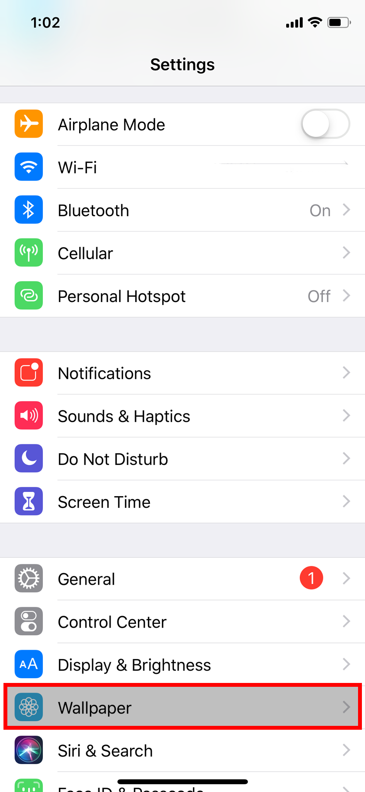
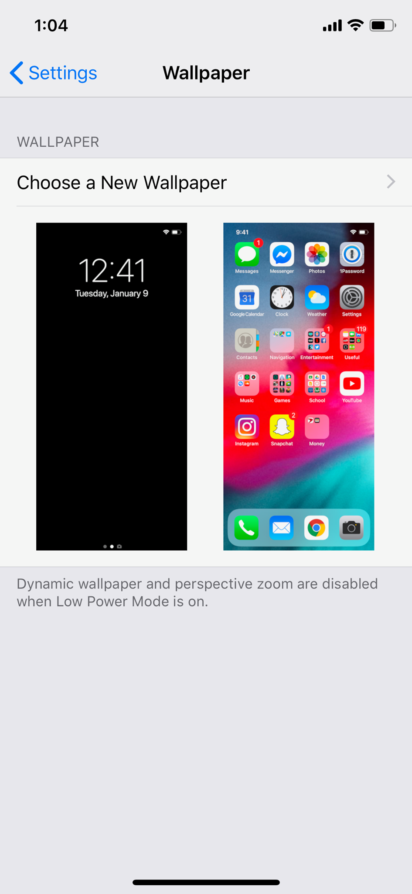
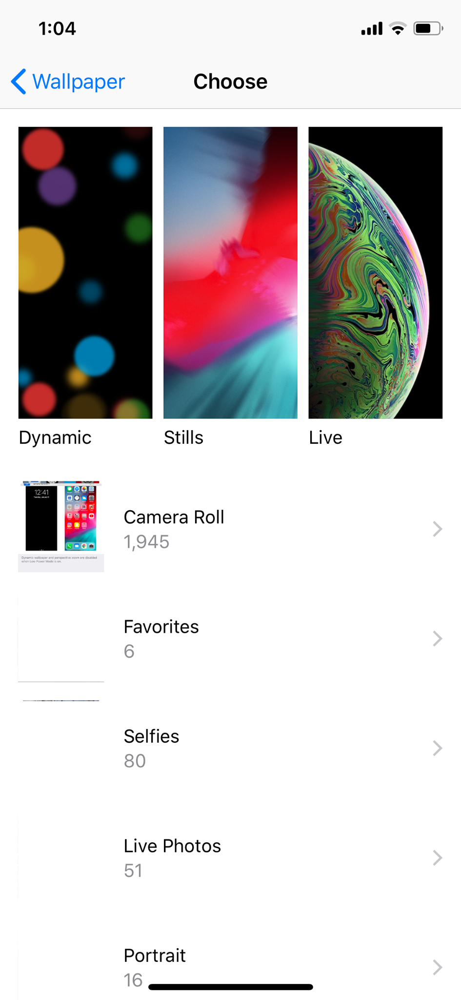
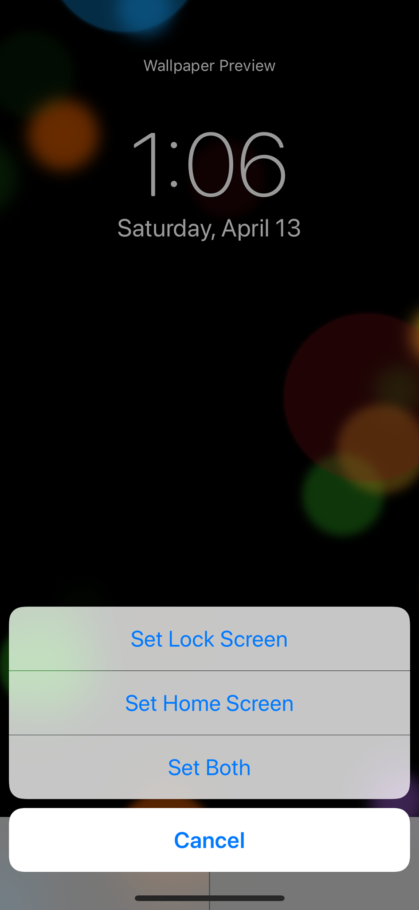

To start, if you have a specific image in mind, make sure you have the image saved to your photos.
Open the "Settings" app. Scroll down and tap the category that reads "Wallpaper".

Tap the “Choose a New Wallpaper” button. This will take you to your photo library.

Towards the top, you will see categories of images selected by Apple which you can use. If you wish to choose your own image, your phone's Camera Roll and photo libraries are accessible below.

When you choose an image to set as your Wallpaper or Lock Screen, tap on the image to select it and press the “Set” button. You will be prompted with the following choices:

Your Lock Screen refers to when your phone is locked, your Home Screen refers to the image behind your apps.
Return to Home Page